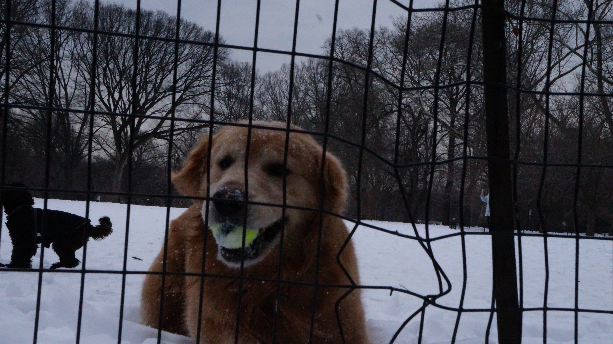
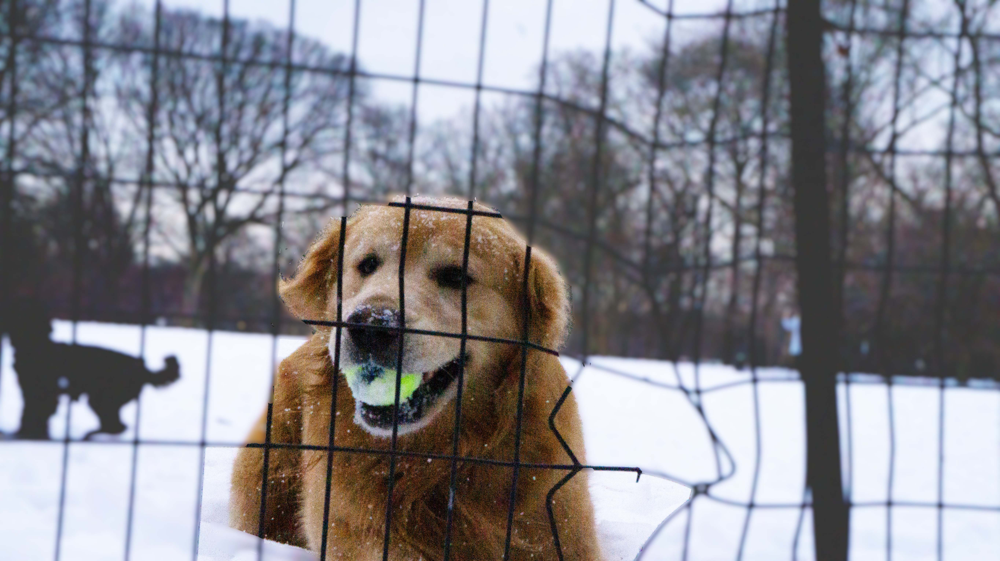

I included a close-up of a dog in Central Park as the foreground and other dogs in the snow as the background. I edited it in Photoshop to make the background blurrier and have a shallower depth of field. I also adjusted the colors to be more bright and saturated.

